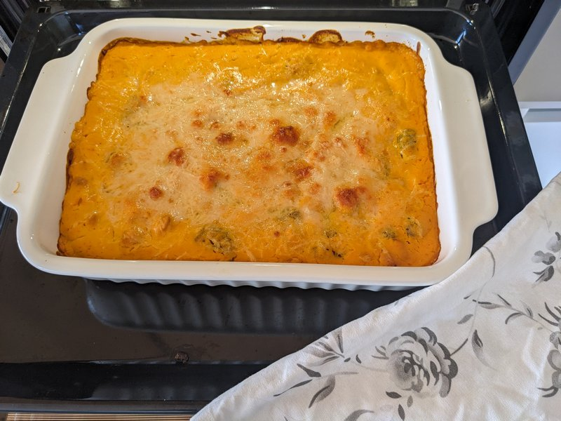

Tento recept u Olíka sklidil tak nečekaný ohlas, že si ho sem rozhodně musím uložit. O. obecně dýni moc nemusí, snese ji leda tak zavařenou nasladko nebo rozmixovanou v polévce, což coby milovník podzimní zeleniny těžce nesu :-). Tento recept podle mého oblíbeného blogu Milluji je však totální game changer, který způsobil, že si dokonce dvakrát přidal!
- 600g dýně Hokkaido
- 1 cibule
- 1 stroužek česneku
- 1 lžíce olivového oleje
- 500g bramborových noků
- 180g vege nudliček Pan Hrášek
- 200ml krémové smetany do omáček
- 200-300ml zeleninového vývaru
- 50g parmezánu
Dýni omyjeme, rozkrojíme, vydlabeme semínka a nakrájíme na menší kousky, které přendáme do zapékací mísy. Přidáme očištěnou a pokrájenou cibuli a stroužek česneku, osolíme, zakápneme olivovým olejem a dáme péct do trouby rozpálené na 180°C na cca 20 minut. Upečenou zeleninu poté rozmixujeme s vývarem a smetanou. Vývar přidáváme postupně až do požadované konzistence omáčky. Do zapékací mísy nyní nasypeme noky a vege nudličky a zalijeme dýňovou omáčkou. Navrch posypeme nastrouhaným parmezánem. Zapékáme v troubě cca 30 minut, na posledních 5 minut můžeme zvýšit teplotu na 220°C.
